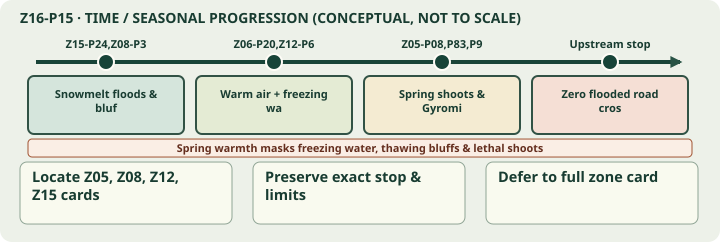

Z16-P15 · Field reference atlas · New manuscript
Spring Thaw, Flood Washout, Bluff Rockfall and Morel Season Index
Locate the original encyclopedia cards for spring Thaw, Flood Washout, Bluff Rockfall and Morel Season Index.
When it applies · Offline reference lookup. The linked chapter defines the situation, audience and limits.
Equipment · Offline reader or the complete linked source cards in print.

Actions
- Open Z15-P24 for obey Turn Around Don't Drown: 6-inch walking and 12-inch vehicle flood physics; Z08-P32 for karst Sinkholes, Undercut Riverbanks and Slope Failure Cues.[A10, D05, R16]
- Open Z05-P98 for true Morels (Morchella spp.) vs False Morels (Gyromitra & Verpa); Z05-P08 for seasonal Phenology Shifts and Life-Stage Identification Traps.[A10, B05, B10]
- Read the linked card’s applicability, equipment and stop conditions together. Keep review and source limitations attached to any excerpt.[A10, ED]
Failure recognition · Acting on a keyword or title while overlooking an upstream exception or stop condition.[A10, ED]
Verify · Confirm the exact page ID and read the full conditions before using the reference.[A10, ED]
Stop or change course · If the situation falls outside a linked card’s conditions or its stop rule applies, stop using this index as a decision aid. Follow the full card and current local directions.[A10, ED]
Evidence and editorial notes
- A10 · FEMA / Ready.gov · Make a Plan (current web edition)
- Section: Offline reader navigation, historical lineage, and HOLD transparency · Conditions: Using the complete 16-zone offline archive, zone readers, and print proofs
Support: Navigation aids expose draft status, reconstruction lineage, open diagnostic photo needs, and pending specialist holds on every lookup path.
Limitations: This index entry does not independently establish any safety, regulatory or diagnostic instruction. · Conflicting evidence: None noted.
Editorial note: Index design and cross-reference policy. Substantive directions come from linked upstream chapter claims. · Specialist reviewer: Accessibility, print QA, and editorial reviewer
Primary source · checked 2026-11-24 - B05 · MyCoPortal · North American Fungal Voucher Collections Portal (Current web edition)
- Section: Separate fungal voucher collections and microscopic/macro traits · Conditions: Documenting macrofungi across North American collections
Support: Fungal taxonomy requires distinct anatomical schemas (cap, gills/pores/teeth, attachment, ring, volva, spore print, substrate, and often microscopy).
Limitations: Fungal species complexes frequently overlap macroscopically; photos alone cannot confirm edibility. · Conflicting evidence: None noted.
Editorial note: Keeps botanical and fungal schemas separate. · Specialist reviewer: Qualified mycologist
Primary source · checked 2026-11-25
Current assessment · A04-B05 (2026-11-25) · Open: support partial or missing (A04): Records can supply vouchers. No universal schema covers all fungi. Need taxon-specific monograph, angle and microscopy requirements. Limits: Specialist review PENDING (Qualified mycologist); publication HOLD. All release decisions pending. - B10 · National Capital Poison Center · Poisonous Plants and Berries Overview (Current web edition)
- Section: Poisonous plants, berries, and dose-dependent pediatric risk · Conditions: Household, trailside, and wild berries, seeds, and foliage
Support: Many attractive wild berries, seeds, and roots contain cardiac glycosides, alkaloids, or oxalates that cause rapid toxicity, especially in children.
Limitations: Never sample unknown plants; recognition and consumption suitability remain separate decisions. · Conflicting evidence: None noted.
Editorial note: Separates recognition from consumption. · Specialist reviewer: Clinical toxicologist and botanist
Primary source · checked 2026-11-25
Current assessment · A04-B10 (2026-11-25) · Reopened: earlier closure narrowed (A04): Supports poison avoidance and referral. Compound groups, onset and pediatric outcomes differ by species and exposure. Broad timing and category assertion needs species-level toxicology. Limits: Specialist review PENDING (Clinical toxicologist and botanist); publication HOLD. All release decisions pending. - D05 · FEMA / Ready.gov · Floods (current web edition)
- Section: Floods: During; Turn Around, Don’t Drown · Conditions: Flooded roads or trails, flood alert, or post-flood re-entry
Support: Move to safe higher ground when directed, never walk or drive into floodwater, and respect closures and re-entry restrictions.
Limitations: Depth examples are warning illustrations, never safe entry thresholds. Trapped or submerged vehicles require emergency help and scene-specific response. · Conflicting evidence: See A02 claim audit for boundaries.
Editorial note: Core flood evacuation, water-avoidance, and safe re-entry evidence. · Specialist reviewer: Emergency management and flood hydrology
Primary source · checked 2026-11-24 - R16 · Minnesota DNR · Rocks and Minerals of Minnesota Educational Guide (Current web edition)
- Section: Sedimentary limestone, sandstone, and shale permeability · Conditions: Southeastern Minnesota karst, bluff, and river-valley sedimentary strata
Support: Sandstone, limestone, and shale differ sharply in cementation, porosity, and fissility, governing weathering and cliff instability.
Limitations: Karst bluffs and fractured shales shed rockfall unpredictably; visual inspection cannot certify slope or load stability. · Conflicting evidence: None noted.
Editorial note: Covers Upper Midwest sedimentary rock hazards. · Specialist reviewer: Engineering geologist
Primary source · checked 2026-11-25
Source lineage · New manuscript (Z16 P20 seasonal index) · Classification · New manuscript.